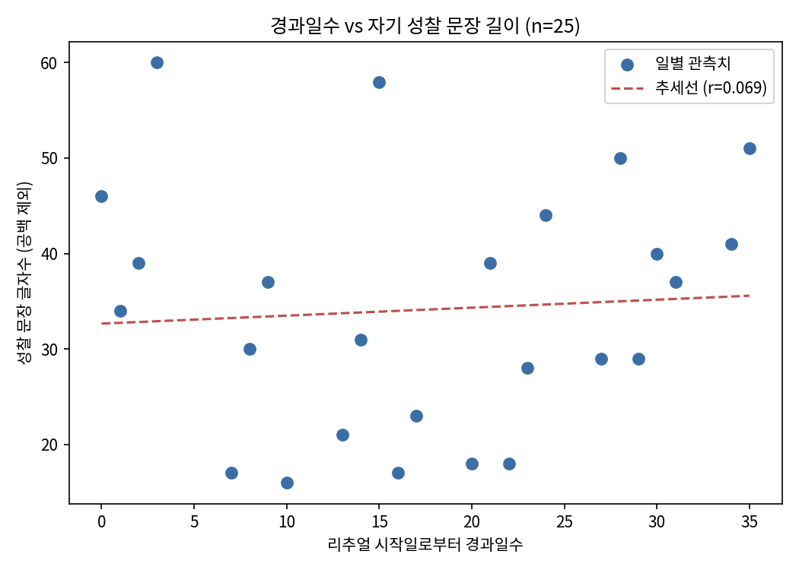

자기관찰 연구 · 대표작
리추얼 지속 기간이 자기 성찰 문장 길이에 미치는 영향
매일 아침·저녁 리추얼(자기 성찰 기록)을 지속할수록 성찰이 깊어져 글이 길어질 것이라는 통념이 있다. 이 연구는 이 통념을 검증하기 위해, 2026년 8월 11일부터 9월 15일까지 26일간 작성된 리추얼 기록 중 25일치의 "강점을 위해 노력하고 생각한 것" 문장을 대상으로, 리추얼 시작일로부터의 경과일수와 문장 길이(공백 제외 글자 수) 사이의 피어슨 상관계수를 계산했다. 분석 결과 상관계수는 r=0.0692로 사실상 관계가 없었으며, 이는 "지속 기간이 길어질수록 성찰 문장이 길어진다"는 최초 가설을 뒷받침하지 않았다. 이 결과는 짧은 기간의 실험적 글쓰기에서도 유사한 양상이 보고된 선행 연구(Pennebaker & Beall, 1986)와 방향이 일치하며, 문장 길이는 지속 기간보다 그날그날의 개별 사건에 더 좌우될 가능성을 시사한다.
1. 서론
자기 성찰 기록(저널링, 리추얼)을 오래 지속하면 성찰이 점점 깊어지고, 그 결과 기록하는 글의 분량도 늘어날 것이라는 생각은 직관적으로 그럴듯하다. 실제로 장기간의 성찰 저널링이 메타인지적 인식 발달과 관련이 있다는 종단 연구도 존재한다(Alt & Raichel, 2020). 반면 표현적 글쓰기(expressive writing) 분야의 고전적 연구인 Pennebaker와 Beall(1986)은 4일간의 감정 글쓰기 실험에서 날짜(세션)에 따른 글 분량 변화가 통계적으로 유의하지 않았다고 보고했다. 즉 짧고 강제적인 글쓰기 조건에서는 시간 경과가 분량에 영향을 주지 않았다.
이러한 선행 연구들은 대부분 단기간의 통제된 실험 상황을 다루고 있어, 자발적으로 장기간 지속하는 습관적 글쓰기에서도 같은 패턴이 나타나는지는 분명하지 않다. 표현적 글쓰기의 언어적 특징을 분석하는 것이 심리 상태를 보여주는 유효한 방법이라는 점(Slatcher & Pennebaker, 2006; Baikie & Wilhelm, 2005)에 근거하여, 이 연구는 다음과 같은 가설을 세웠다.
가설: 리추얼을 지속한 기간(경과일수)이 길어질수록, 그날 작성한 자기 성찰 문장의 길이가 길어진다.
이미 알려진 사실(짧은 실험적 글쓰기에서는 시간에 따른 분량 변화가 없었다는 것)과 달리, 이 연구는 26일에 걸친 자발적·장기적 습관적 글쓰기에서는 다른 패턴이 나타날 수 있다는 것을 새로 검증하고자 했다.
2. 방법
2.1 데이터
2026년 8월 11일부터 9월 16일까지 작성된 아침·저녁 리추얼 기록(총 26일치)을 사용했다. 이 중 마무리(저녁) 기록이 없는 9월 16일을 제외한 25일치를 분석 대상으로 삼았다. 이 데이터는 공개된 데이터셋이 아니라 연구자 본인(박성민)이 리추얼 활동을 통해 직접 작성한 자기보고 기록이다.
2.2 실험 설계 및 측정
| 구분 | 내용 |
|---|---|
| 바뀌는 것(독립변수) | 리추얼 시작일(2026-08-11)로부터의 경과일수(정수, 일 단위) |
| 고정한 것 | 측정 대상 문장 필드(매일 동일하게 "강점을 위해 노력하고 생각한 것"), 측정 방법(공백 제외 글자 수), 응답자(박성민 1인) |
| 반복 횟수/표본 수 | 25일 |
2.3 절차
파이썬 스크립트(analyze.py)로 원본 리추얼 기록 JSON 파일에서 날짜별 대상 문장을 추출하고, 정규식으로 공백을 제거한 뒤 글자 수를 계산했다. 각 날짜의 경과일수와 글자 수를 raw_data.csv로 저장한 뒤, 피어슨 상관계수를 계산했다.
3. 결과
| 항목 | 값 |
|---|---|
| 표본 수 (n) | 25 |
| 평균 글자수(공백 제외) | 34.12자 |
| 표준편차 | 12.92자 |
| 최솟값 | 16자 (2026-08-21) |
| 최댓값 | 60자 (2026-08-14) |
| 피어슨 상관계수 (r) | 0.0692 |

점들은 추세선 주변에 뚜렷한 방향 없이 넓게 흩어져 있다. 경과일수가 3일에 불과한 초반(2026-08-14)에 이미 최댓값(60자)이 나타났고, 경과일수 35일차인 후반(2026-09-15)에도 51자로 비교적 긴 값이 나타나는 등, 경과일수만으로는 문장 길이의 패턴을 설명하기 어려웠다.
4. 논의
판단: 데이터는 "리추얼 지속 기간이 자기 성찰 문장 길이에 영향을 준다"는 최초 가설을 뒷받침하지 않는다. 표본이 25일·1인의 자기보고 데이터에 그쳐 일반화할 수 없다는 한계가 있고, 인과관계도 단정할 수 없다.
수정 제안 가설: 자기 성찰 문장의 길이는 리추얼 지속 기간보다, 그날의 개별 사건 성격(예: 팀 활동 유무, 실습 난이도)에 더 크게 좌우된다. (이번 연구에서 직접 검증하지 않았으며 향후 과제로 남김)
참고문헌
- Alt, D., & Raichel, N. (2020). Reflective journaling and metacognitive awareness. Reflective Practice, 21(2).
- Baikie, K. A., & Wilhelm, K. (2005). Emotional and physical health benefits of expressive writing. Advances in Psychiatric Treatment, 11(5), 338–346.
- Pennebaker, J. W., & Beall, S. K. (1986). Confronting a traumatic event. Journal of Abnormal Psychology, 95(3), 274–281.
- Slatcher, R. B., & Pennebaker, J. W. (2006). How do I love thee? Let me count the words. Psychological Science, 17(8), 660–664.
AI에게 맡긴 일: 선행 연구 검색·확인, 데이터 추출·분석 스크립트 작성, 그래프 생성, 초안 작성
내가 직접 판단한 일: 가설·측정 방법 확정, 결과 해석과 한계 서술, 수정 가설 제안
AI 제안을 따르지 않은 일: 없음 — 분석 방법과 해석 방향은 그대로 채택했으나, 결과 해석·결론 표현은 원자료를 직접 확인하며 수정함